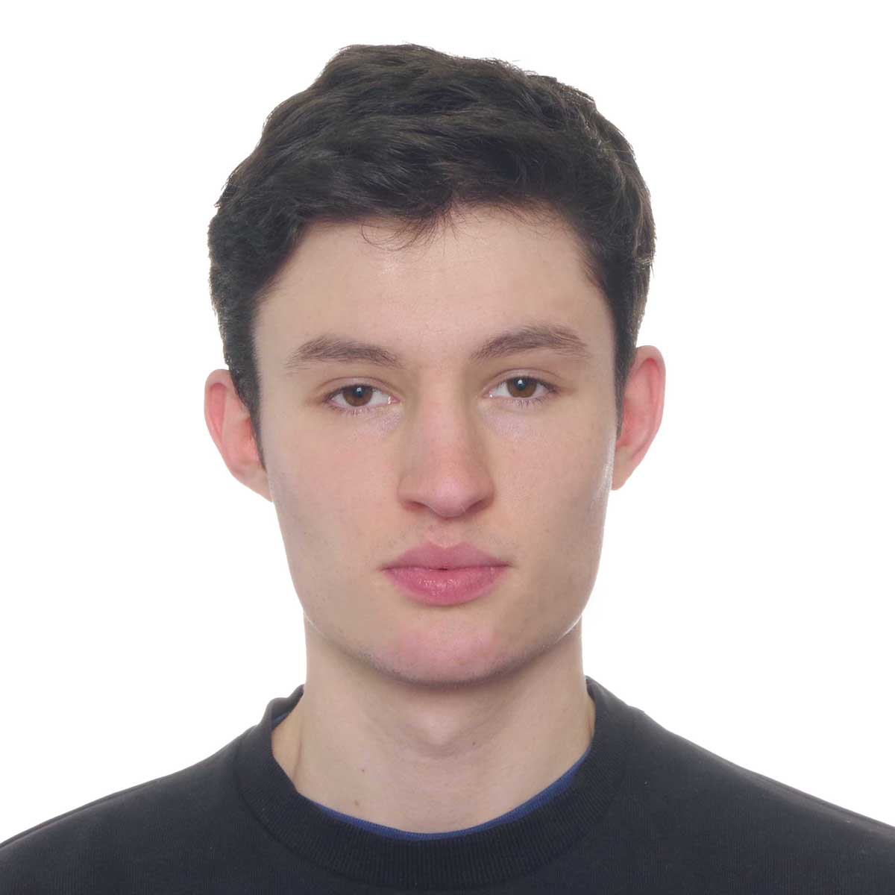

Education
Bachelor of Applied Sciences and Engineering 2020-2025 (expected)
- Major in Electrical and Computer Engineering + PEY Co-op, University of Toronto
- Minor in Artificial Intelligence and Machine Learning
- Relevant courses: Software Design & Communication, Engineering Strategies & Practice I & II,
Computer & Programming Fundamentals, Calculus I, II & III, Linear Algebra, Advanced Engineering Mathematics
Skills
- Soft skills: Problem-solving, Communication, Leadership
- Applications: Microsoft Office suite (Teams, Word, Power Point, Excel), Android Studio, Git, Quartus
- Programming: JavaScript, HTML5, CSS3, C/C++, Python, Kotlin, Verilog, ARM Assembly
- Analysis/Simulation: MATLAB, SPICE
- Languages: Native proficiency in French and in English (bilingual), B2 level in German and Spanish
- Software Design Life Cycle, Object-oriented Programming, Consulting
Projects
Project Manager | Map Application project | U of T Jan. 2022 – May 2022
- Developing a program like Google Maps in C++ with 2 partners, using: databases and APIs,
pathfinding algorithms, STL templates & data structures (vectors and maps) for performance
- Collaborating using Git & code review process, design & communication skills for large software projects
- Designing Graphical User Interface to search, move, and zoom to any desired location defined in the map
Android development Lead | Study BuddySept. 2021 – May 2022
- Started a mobile productivity application project with two partners, help students apply learning practices
- Established a work environment promoting collaboration, quality, and innovation by using Agile principles
- Used the learning techniques to be implemented in the app, learned Android development, created prototypes
Team Leader | Engineering Strategies & Practice | U of TSept. 2020 - May 2021
- Led a team of 6 in semester-long design project, improving communication of a non-verbal student
- Implemented design thinking tools and methods, to increase the team’s productivity and the quality of our design
- Proposed a clear and sturdy communication software application, which was adopted by our client
Team Member | U of T Engineering CompetitionJan. 2021
- Collaborated with 3 engineering students under timed conditions
- Delivered and presented a consulting report to a panel of university and industry experts, won the competition
Work Experience
Caregiver | University affiliated hospital of Angers | FranceMay-July 2021
- Reduced the hospital’s exposure to COVID-19, developed a screening procedure, increasing safe visits by 10%
- Organized five Skype meetings daily to connect patients with their family, and group activities, reducing isolation
Summer Intern | General Electric Digital | ParisJune – July 2018
- Programmed a Graphical User Interface with Python, and was mentored on UI design for industrial software
- Examined how energy grid analysis software use ML, to help companies in their digital transformation
Extracurriculars
Varsity Athlete (Fencing) | U. of Toronto Varsity Blues TeamSept. 2021- present
- Managing time to train for 12+ hours per week in addition to Engineering courses
- Competed at the National Competition of the Canadian Fencing Federation, obtaining 30th place
Volunteer tutor | Humanitarian trip to Ahmedabad | IndiaJan. 2019